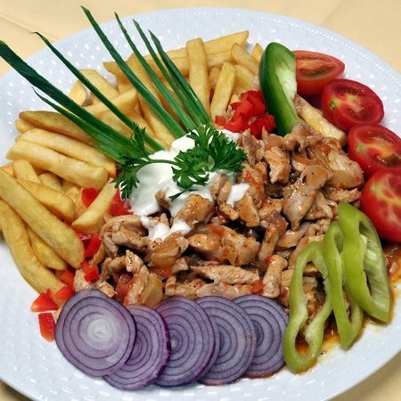

Gyros

Leírás
Egy finom Serpenyős gyros ebédre vagy vacsorára? Serpenyős gyros a válasz
Hozzvalók
- 60 dkg Csirkemell
- 1 fej lilahagyma
- 1 tk zöldpaprika
- 2 db paradicsom
- Gyros fűszerkeverék
- Tejszín
- Olívaolaj
- Öntethez:
-
- 3 dl kefír
- 2 gerezd fokhagyma
- Só
- Bors
Elkészítés
- 2 evőkanál olívaolajon 2-3 percig pároljuk az összedarabolt hagymát, paprikát és paradicsomot. Sózzuk, borsozzuk, felöntjük 1 dl vízzel, és beledobjuk a húst. 1 csapott evőkanál gyros fűszerkeveréket összekeverünk 0,5 dl vízzel, és ezt is ráöntjük. Jól összeforraljuk, ráöntjük a tejszínt, és addig forraljuk, míg nem marad lé alatta, csak a szaftos hús.
-
Sült burgonyát adhatunk hozzá. Tehetünk mellé még szeletelt uborkát, paprikát vagy hagymát, paradicsomot, esetleg káposztakeverékét, és végül az egészet leöntjük kefires vagy joghurtos
öntettel.